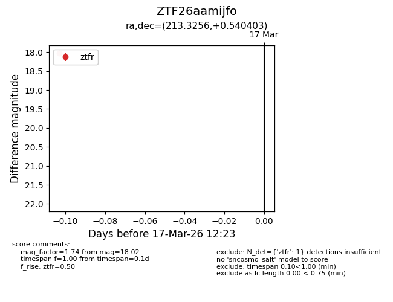
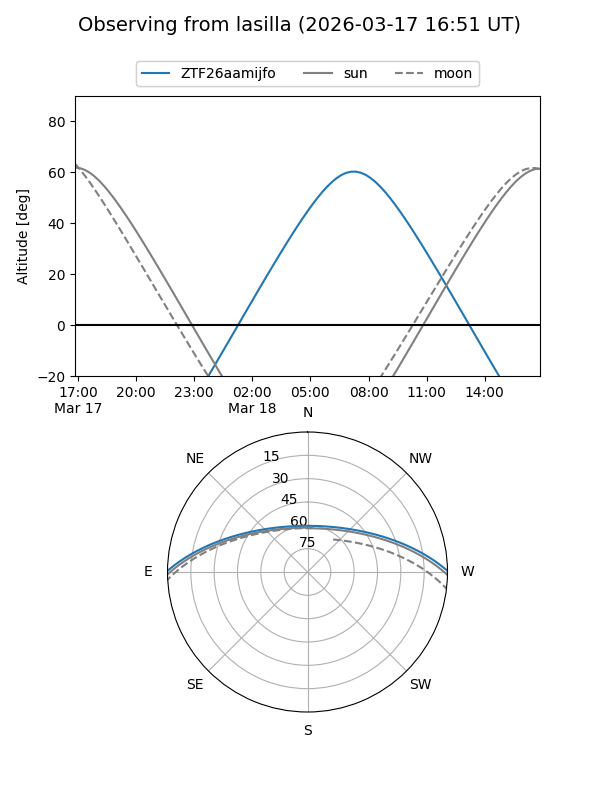
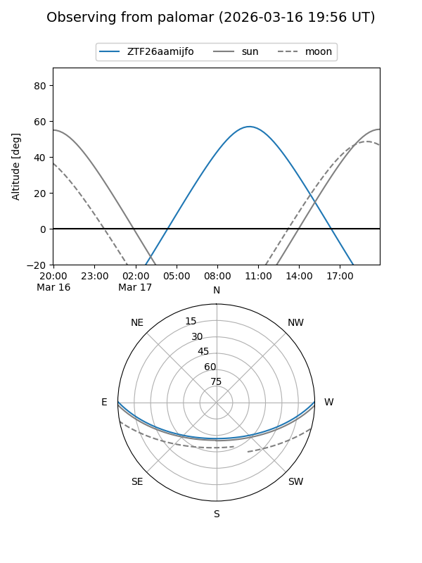

ZTF26aamijfo
Target ZTF26aamijfo at 2026-03-17 12:25
Aliases and brokers:
FINK: link
Lasair: link
ALeRCE: link
alt names
ZTF26aamijfo (ztf,fink_ztf)
Coordinates:
equatorial (ra, dec) = 213.3256,+0.54040
equatorial (HMS+DMS) = 14:13:18.15,+00:32:25.45
galactic (l, b) = (342.7898,+56.93736)
Flags:
Photometry:
last ztfr=18.02
1 ztfr detections
Lightcurve

Visibility


Additional plots